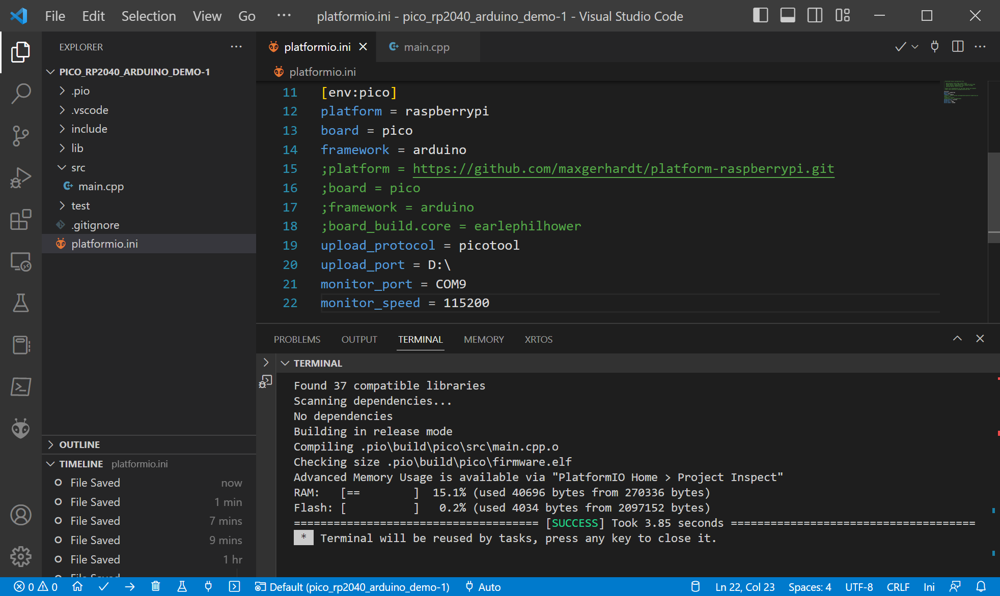
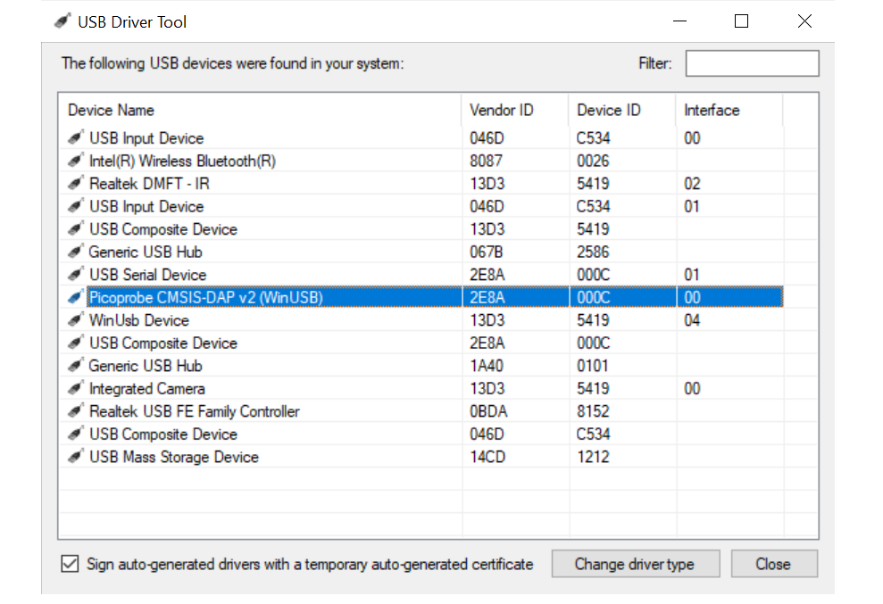
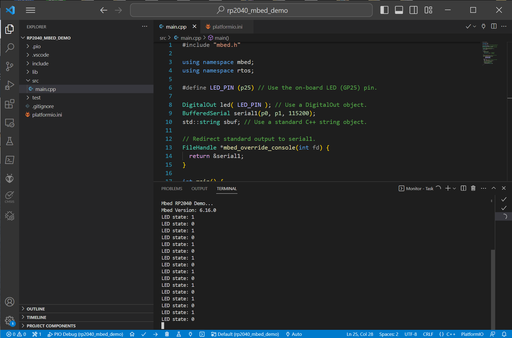

การเขียนโปรแกรม Arduino สำหรับบอร์ด Raspberry Pi Pico (RP2040) โดยใช้ VS Code IDE#
Keywords: Raspberry Pi Pico, RP2040, Visual Code Studio, PlatformIO
บทความนี้นำเสนอการใช้งานซอฟต์แวร์ Visual Studio Code ร่วมกับ PlatformIO (PIO) Extension สำหรับระบบปฏิบัติการ Windows 10 / 11 เพื่อใช้ในการเขียนโปรแกรม Arduino Sketch และนำไปทดลองกับบอร์ดไมโครคอนโทรลเลอร์ Raspberry Pi Pico (RP2040)
รูป: ผังแสดงตำแหน่งขาของบอร์ด Raspberry Pico RP2040
▷ การติดตั้งซอฟต์แวร์ VS Code IDE และ PIO Extension#
หากยังไม่เคยใช้งาน VS Code IDE ก็ให้ดาวน์โหลดไฟล์เพื่อมาติดตั้งโปรแกรมในเครื่องผู้ใช้ได้จาก https://code.visualstudio.com/download# เมื่อเปิดใช้งานโปรแกรมแล้ว ให้ค้นหา Extension โดยระบุคำค้นหาเป็นชื่อ PlatformIO แล้วคลิกเลือกและกดปุ่ม Install เพื่อทำการติดตั้ง เมื่อเริ่มต้น VS Code IDE อีกครั้ง จะเห็นไอคอนในแถบทางซ้ายมือสำหรับ PIO กดคลิกเพื่อเปิดหน้าหลัก PIO Home
รูป: VS Code IDE ที่ได้มีการติดตั้ง PIO Extension แล้ว
รูป: หน้าหลักของ PIO Home
ในหน้า PIO Home ให้กดคลิก "+New Project" ในส่วนที่เรียกว่า Quick Access และให้กำหนดค่าสำหรับโปรเจกต์ใหม่ ในหน้าต่าง Project Wizard เช่น ชื่อของโปรเจกต์ (Project Name) ชื่อบอร์ดไมโครคอนโทรลเลอร์ (Board) และสิ่งที่ใช้สำหรับการเขียนโค้ด หรือ Framework แล้วกดปุ่ม Finish
รูป: การสร้างโปรเจกต์ใหม่
เมื่อสร้างโปรเจกต์ใหม่แล้ว ให้ลองเปิดไฟล์ platformio.ini และ main.cpp
ที่ถูกสร้างขึ้นโดยอัตโนมัติและเป็นส่วนหนึ่งของโปรเจกต์

รูป: ไฟล์ platformio.ini ของโปรเจกต์
รูป: ไฟล์ Arduino Sketch (main.cpp) ที่ถูกสร้างโดยอัตโนมัติ
ลองเพิ่มเติมโค้ดในไฟล์ main.c แล้วกดปุ่ม ✓ ในแถบด้านล่าง เพื่อทำขั้นตอน Build

รูป: การตั้งค่าเพิ่มเติมสำหรับโปรเจกต์ในไฟล์ platformio.ini
#include <Arduino.h>
void setup() {
Serial.begin(115200); // Initialize Serial
pinMode( LED_BUILTIN, OUTPUT ); // Set pin direction for output
}
void loop() {
int state = !digitalRead(LED_BUILTIN);
digitalWrite( LED_BUILTIN, state ); // Update LED output
String str = "LED state: ";
str += state;
Serial.println( str.c_str() ); // Send a message to Serial
delay(500);
}
ข้อสังเกต: การเขียนโปรแกรม Arduino โดยใช้บอร์ด Raspberry Pi Pico มีสองตัวเลือกสำหรับการเขียนโค้ด ดังนี้ และมีความแตกต่างกันในหลายลักษณะการใช้งาน
- Arduino Mbed Core for RP2040: พัฒนาโดยทีมงานของ Arduino และใช้ Arm Mbed OS เป็นพื้นฐานในการทำงาน โปรเจกต์ที่ถูกสร้างขึ้นใน VS Code IDE จะใช้ตัวเลือกนี้ ดูตัวอย่างการเขียนโค้ดได้จากบทความ "การเขียนโปรแกรมด้วย Arduino Pico Core สำหรับไมโครคอนโทรลเลอร์ Raspberry Pi Pico"
- Raspberry Pi Pico Arduino Core: พัฒนาโดย Earle Philhower ซึ่งไม่ได้ใช้ Arm Mbed OS และถือว่าเป็นอีกตัวเลือกหนึ่งที่ใช้ได้เช่นกัน
การอัปโหลดไฟล์เฟิร์มแวร์ไปยังบอร์ด Raspberry Pi Pico
ผ่านทางพอร์ต USB เชื่อมต่อกับคอมพิวเตอร์ของผู้ใช้
จะต้องทำให้ชิป RP2040 เข้าสู่โหมด USB Bootloader (.uf2)
โดยการกดปุ่ม BOOTSEL (Boot Select) ค้างไว้แล้วกดปุ่มรีเซตตามลำดับ
จากนั้นจึงจะมองเห็น USB Drive (ชื่อ RPI-RP2) สำหรับบอร์ดที่กำลังเชื่อมต่ออยู่
ในตัวอย่างไฟล์ platformio.ini ได้เลือกใช้วิธีการอัปโหลดด้วยโปรแกรมที่มีชื่อว่า picotool
และจะต้องระบุชื่อไดร์ฟ เช่น D:\ สำหรับบอร์ด Raspberry Pi Pico
ข้อสังเกต: บอร์ด Raspberry Pi Pico ไม่มีปุ่ม Reset มีแต่ปุ่ม BOOTSEL ดังนั้นแนะนำให้ต่อวงจรปุ่มกดเพิ่ม (แบบ Active-low) ที่ขา RUN เพื่อความสะดวกในการใช้งาน
ถ้าต้องการเขียนโค้ดโดยใช้ Arduino Mbed Core for RP2040
ให้ตั้งค่าการใช้งานในไฟล์ platformio.ini ของโปรเจกต์ ดังนี้
[env:pico]
platform = raspberrypi
board = pico
framework = arduino
upload_protocol = picotool
upload_port = D:\
แต่ถ้าต้องการเขียนโค้ด โดยใช้ Raspberry Pi Pico Arduino Core ก็มีตัวอย่างการตั้งค่าการใช้งานดังนี้
[env:pico]
platform = https://github.com/maxgerhardt/platform-raspberrypi.git
board = pico
framework = arduino
board_build.core = earlephilhower
upload_protocol = picotool
upload_port = D:\
PlatformIO จะติดตั้งโปรแกรมต่าง ๆ ที่เกี่ยวข้อง ภายใต้ไดเรกทอรี
%homepath%\.platformio\packages สำหรับผู้ใช้ระบบปฏิบัติการ Windows
รูป: ตัวอย่างไดเรกทอรีสำหรับโปรแกรมต่าง ๆ ที่ได้มีการติดตั้งและใช้งานโดย PlatformIO
เมื่อมีการเปลี่ยนแปลงแก้ไขไฟล์ platformio.ini แล้ว ถัดไปให้ทำขั้นตอน PlatformIO: Build
ใหม่อีกครั้ง โดยคลิกเลือกไอคอน → ในแถบด้านล่าง
รูป: การคอมไพล์โค้ดในขั้นตอน PlatformIO: Build
เมื่อสามารถคอมไพล์โค้ดและสร้างไฟล์เฟิร์มแวร์ได้แล้ว
(สังเกตได้จากข้อความเอาต์พุตในหน้าต่าง Terminal จะเห็นว่ามีชื่อไฟล์
.pio\build\pio\firmware.elf) ก็ให้อัปโหลดไฟล์ไปยังบอร์ด Pico
รูป: การอัปโหลดไฟล์เฟิร์มแวร์ไปยังบอร์ด Pico ในขั้นตอน PlatformIO: Upload
กดปุ่มจากแถบไอคอนด้านล่าง เพื่อเปิดใช้งาน Serial Monitor จะได้รับข้อความจากบอร์ด Pico ตามตัวอย่างในรูปต่อไปนี้
รูป: การแสดงข้อความที่ได้รับจากบอร์ด Pico
เมื่อบอร์ด Pico ทำงานได้ตามเฟิร์มแวร์ที่ได้อัปโหลดไปแล้ว และมีการใช้งาน Serial (USB CDC)
ในโค้ด Arduino Sketch การอัปโหลดไฟล์ครั้งถัดไปโดยใช้โปรแกรม picotool ก็ไม่จำเป็นต้องกดปุ่มเพื่อทำให้บอร์ดเข้าสู่โหมด USB Bootloader
▷ อุปกรณ์สำหรับการอัปโหลดไฟล์เฟิร์มแวร์และดีบักโค้ด#
VS Code IDE และ PlatformIO / PIO Debug รองรับการดีบักการทำงานของโปรแกรมในระดับซอร์สโค้ด (Source-Level Debugging) โดยใช้ฮาร์ดแวร์ ซึ่งมีสองอุปกรณ์ที่สำคัญคือ บอร์ด Pico และ Hardware Debugger ซึ่งจะต้องรองรับโพรโทคอล Arm CMSIS-DAP และใช้การเชื่อมต่อแบบ SWD Interface
ตัวอย่างอุปกรณ์ที่สามารถนำมาใช้ได้
- SEGGER J-Link / J-Link EDU Debug Probe
- อุปกรณ์ที่รองรับการดีบักด้วย JTAG / SWD และมีราคาถูกกว่า J-Link Debug Probe
- PicoProbe: ใช้บอร์ด Pico อีกหนึ่งอันมาติดตั้งเฟิร์มแวร์ที่มีชื่อว่า picoprobe.uf2 เพื่อให้บอร์ดทำหน้าที่ได้เหมือนอุปกรณ์ SWD Debug Probe
รูป: ตัวอย่างอุปกรณ์ SWD / DAPLink Debug Probes ที่มีราคาไม่แพง
ข้อสังเกต:
- การดีบักโดยใช้อุปกรณ์ประเภทนี้สำหรับระบบปฏิบัติการ Windows 10 / 11 จะต้องติดตั้ง WinUSB เพื่อใช้เป็น USB Driver สำหรับอุปกรณ์ เพื่อให้สามารถใช้งานได้กับโปรแกรม OpenOCD
- การเลือกใช้ WinUSB Driver สำหรับอุปกรณ์ประเภทนี้ สามารถทำได้ไม่ยาก โดยใช้โปรแกรม เช่น USBDriverTools

รูป: ตัวอย่างการใช้งานอุปกรณ์ PicoProbe เพื่อทำให้บอร์ด Pico (+ PCB Adapter) เป็นอุปกรณ์ SWD Debug Probe (Source: picoprobe-pcb)
▷ การใช้บอร์ด Pico เป็นอุปกรณ์ Debug Probe#
การใช้บอร์ด Pico ทำหน้าที่เป็น CMSIS-DAP / SWD Debug Probe และเชื่อมต่อกับบอร์ด Pico อีกบอร์ดหนึ่งมีรูปแบบดังนี้
รูป: การเชื่อมต่อระหว่างบอร์ด Pico - PicoProbe กับบอร์ด Pico - Target Board (Source: "Getting started with Raspberry Pi Pico")
PicoProbe <--> Pico Target
--------------------------
VSYS (5V) VSYS (5V)
GND GND
--------------------------
GP2 SWCLK
GP3 SWDIO
GP4/UART1_TX GP1/UART0_RX
GP5/UART1_RX GP0/UART0_TX
--------------------------
การติดตั้งไฟล์เฟิร์มแวร์ picoprobe.uf2
จาก https://github.com/raspberrypi/picoprobe/
จะทำให้บอร์ด Pico กลายเป็นอุปกรณ์ CMSIS-DAP v2 และจะมีการติดตั้ง WinUSB Driver โดยอัตโนมัติ

รูป: การตรวจสอบ USB Driver สำหรับ PicoProbe CMSIS-DAP v2 (VID=0x2E8A และ PID=0x000C) โดยใช้โปรแกรม USBDriverTools
การตั้งค่าในไฟล์ platformio.ini สำหรับการดีบักโปรแกรมในระดับซอร์สโค้ดโดยใช้บอร์ด Pico
และ CMSIS-DAP Debug Probe มีตัวอย่างดังนี้
ถ้าใช้ Raspberry Pi Pico Arduino Core (Earle Philhower)
[env:pico]
platform = https://github.com/maxgerhardt/platform-raspberrypi.git
board = pico
framework = arduino
board_build.core = earlephilhower
; use cmsis-dap debug probe for firmware upload
upload_protocol = cmsis-dap
; use cmsis-dap as debug tool
build_type = debug
debug_build_flags = -O0 -ggdb3 -g3
debug_tool = cmsis-dap
; specify the baud rate and the serial COM port
monitor_speed = 115200
monitor_port = COM11
ถ้าใช้ Arduino Mbed Core for RP2040 ก็ให้ตั้งค่าในไฟล์ platformio.ini ดังนี้
(ซึ่งจะต้องใช้ OpenOCD ที่มาพร้อมกับ Arduino Core by Earle Philhower)
[env:pico]
platform = raspberrypi
board = pico
framework = arduino
build_type = debug
; use custom upload protocol
upload_protocol = custom
; use openocd for firmware upload
upload_flags =
-s
tcl
-f
interface/cmsis-dap.cfg
-f
target/rp2040.cfg
-c
adapter speed 4000
-c
init; reset halt; program {${BUILD_DIR}/firmware.elf} verify reset; shutdown
upload_command =
${platformio.packages_dir}/tool-openocd-rp2040-earlephilhower/bin/openocd.exe ${UPLOAD_FLAGS}
; use custom debug tool (openocd)
debug_tool = custom
debug_server =
${platformio.packages_dir}/tool-openocd-rp2040-earlephilhower/bin/openocd.exe
-s tcl -f interface/cmsis-dap.cfg -f target/rp2040.cfg
-c "adapter speed 4000"
; specify the serial COM port and baud rate
monitor_port = COM21
monitor_speed = 115200
เมื่ออัปโหลดไฟล์เฟิร์มแวร์ด้วยวิธี CMSIS-DAP ไปยังบอร์ด RP2040 ได้แล้ว
ถัดไปเป็นการดีบักโปรแกรม โดยใช้ PIO Debug (กดปุ่ม Ctrl+Shift+D)
และมีการกำหนดตำแหน่งบรรทัดในโค้ด เพื่อใช้เป็นตำแหน่งของ Breakpoint(s) ในไฟล์ main.cpp
ถ้ารันโปรแกรมใน Debug Session มาถึงตำแหน่งดังกล่าว โปรแกรมก็จะหยุดชั่วคราว
#include <Arduino.h>
void setup() {
Serial1.begin(115200); // initialize Serial1
pinMode( LED_BUILTIN, OUTPUT ); // set pin direction for output
}
void loop() {
int state = !digitalRead(LED_BUILTIN);
digitalWrite( LED_BUILTIN, state ); // update LED output
String str = "LED state: ";
str += state;
Serial1.println( str.c_str() );
delay(500);
}
รูป: การดีบัก (PIO Debug) โดยใช้ openocd และอุปกรณ์ DAPLink
รูป: การดีบัก (PIO Debug) โดยใช้ openocd
สำหรับ Arduino Mbed Core for RP2040
รูป: การใช้บอร์ด Pico เป็น Debug Probe สำหรับบอร์ด Pico อีกบอร์ดหนึ่ง
▷ โมดูล WCHLink - DAPLink#
อีกหนึ่งอุปกรณ์ที่ได้นำมาลองใช้อีกตัวเลือกหนึ่งคือ WCHLink v1.1 (CH549F) Mini-DAPLink ผลิตโดย WeAct Studio มีขา Pin Headers
- แถวที่ 1: +3.3V, TXD, RXD, GND, +5V
- แถวที่ 2: +3.3V, DIO (SWDIO), CLK (SWCLK), GND, +5V

รูป: โมดูล WCHLink - DAPLink (VID=0x1A86, PID=0x8011)
รูป: การเชื่อมต่อสำหรับ SWD Interface ซึ่งใช้สายสัญญาณ 2 เส้น SWDIO และ SWCLK
ตัวอย่างการเชื่อมต่อระหว่างบอร์ด RP2040 กับ โมดูล WCHLink - DAPLink แบ่งเป็น 2 ส่วน
- ส่วนแรกคือ การเชื่อมต่อ SWD Interface
- ส่วนที่สองคือ การเชื่อมต่อ Hardware Serial
บอร์ด RP2040 ไม่ได้เชื่อมต่อกับคอมพิวเตอร์ของผู้ใช้ด้วยสาย USB แต่ได้แรงดันไฟเลี้ยงจากโมดูล WCHLink
RP2040 <-> WCHLink
-------------------
SWDIO DIO
SWCLK CLK
-------------------
GP0/TX0 RXD
GP1/RX0 TXD
-------------------
GND GND
+3.3V +3.3V
รูป: การเชื่อมต่อระหว่างบอร์ด YD-RP2040 กับโมดูล WCHLink

รูป: แผนผังตำแหน่งขาของบอร์ด VCC-GND Studio YD-RP2040
โค้ดไฟล์ main.cpp ที่มีการเปลี่ยนจากการใช้ Serial (USB-CDC) มาเป็น Serial1
(Hardware Serial) ซึ่งใช้ขา GP0 (UART0_TX) / GP1 (UART0_RX)
และเชื่อมต่อกับโมดูล WCHLink ไปยังคอมพิวเตอร์ของผู้ใช้
ตัวอย่างถัดไปเป็นการเขียนโดยใช้ Arm Mbed API เพื่อสาธิตการส่งข้อความออกทาง Serial โดยเลือกใช้ขา TX=GP0 และ RX=GP1 ตามลำดับ
// File: main.cpp
#include "mbed.h"
using namespace mbed;
using namespace rtos;
#define LED_PIN (p25) // Use the on-board LED (GP25) pin.
DigitalOut led( LED_PIN ); // Use a DigitalOut object.
BufferedSerial serial1( p0 /*TX*/, p1 /*RX*, 115200 /*Baud*/ );
std::string sbuf; // Use a standard C++ string object.
// Redirect standard output to serial1.
FileHandle *mbed_override_console(int fd) {
return &serial1;
}
int main() {
// Intialize serial1
serial1.set_format(
8, // 8 data bits
BufferedSerial::None, // no parity
1 // 1 stop bit
);
printf( "Mbed RP2040 Demo...\n" ); // send string
// send strings to the serial console
printf( "Mbed Version: %d.%d.%d\r\n",
MBED_MAJOR_VERSION,
MBED_MINOR_VERSION,
MBED_PATCH_VERSION );
while(1) {
led = !led; // Toggle and update the LED output.
sbuf = "LED state: ";
sbuf += std::to_string( led.read() );
// Show the current LED state.
printf( "%s\n", sbuf.c_str() );
// Sleep for 500 milliseconds.
ThisThread::sleep_for(
std::chrono::milliseconds(500)
);
}
}
รูป: ตัวอย่างการตั้งค่าในไฟล์ platformio.ini
รูป: การคอมไพล์โค้ดตัวอย่าง

รูป: การรับข้อความเอาต์พุตใน Serial Monitor หลังจากอัปโหลดโปรแกรมไปยังบอร์ดทดลอง
ในส่วนของการดีบักการทำงานของโค้ดเมื่อทำงานโดยใช้ฮาร์ดแวร์จริง หรือ Source-Level Debugging มีตัวอย่างดังนี้
รูป: ตัวอย่างการทำขั้นตอน PIO Debug (เมื่อโปรแกรมถูกหยุดการทำงานชั่วคราวที่คำสั่งแรกของฟังก์ชัน main())
รูป: ตัวอย่างการทำขั้นตอน PIO Debug (เมื่อโปรแกรมถูกหยุดการทำงานชั่วคราวในตำแหน่ง Breakpoint ถัดไป)
▷ กล่าวสรุป#
บทความนี้นำเสนอการใช้งาน VS Code IDE ร่วมกับ PlatformIO Extension เพื่อเขียนโค้ด Arduino Sketch และนำไปใช้กับบอร์ดไมโครคอนโทรลเลอร์ Raspberry Pi Pico หรือบอร์ดที่ใช้ชิป RP2040 เป็นตัวประมวผลหลัก นอกจากนั้นยังได้สาธิตการใช้อุปกรณ์ CMSIS-DAPLink Compatible ร่วมกับโปรแกรม OpenOCD เพื่ออัปโหลดไฟล์เฟิร์มแวร์และทำขั้นตอนดีบักโปรแกรมในระดับซอร์สโค้ด
บทความที่เกี่ยวข้อง
This work is licensed under a Creative Commons Attribution-ShareAlike 4.0 International License.
Created: 2023-02-18 | Last Updated: 2023-09-09